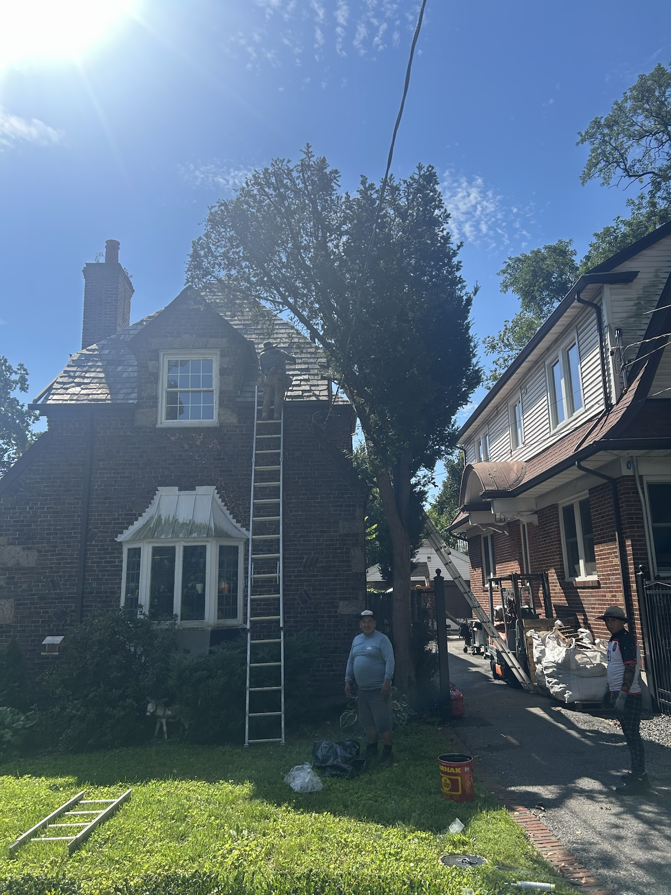
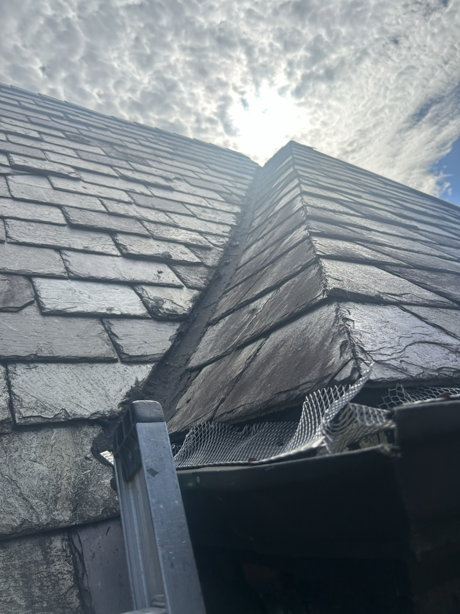

A homeowner on Fort Hill Circle, in the St. George area of Staten Island’s North Shore, contacted Maximum Roofing after experiencing multiple roof leaks. With water entering in more than one place, he was considering replacing the entire slate roof. The potential expense was a major concern, and he wanted to understand whether there was another way to address the problem.
The homeowner also explained that finding a contractor who worked on slate roofing had been difficult. He needed a team that could assess the existing roof, discuss the options, and carry out the work it required.

Our Team Reviewed the Repair Options
After assessing the roof, our team met to discuss its condition and the work needed. We agreed that the affected section could be repaired. We explained this recommendation to the homeowner, giving him an alternative to the full replacement he had been considering.
That conversation changed the direction of the project. The owner learned that the work could focus on the area requiring attention. For someone concerned about the cost of replacing an entire slate roof, knowing that a smaller repair was possible was welcome news.
Replacing Approximately 104 Square Feet of Slate
The repair covered approximately 104 square feet. Our team removed the roofing in the section that needed work and installed new slate in that area. This was a localized section replacement within the existing roof.
The scope matters when describing this job: we removed and replaced the affected section while retaining the rest of the roof. The homeowner received new slate where it was needed without taking on the expense of replacing every roof section.
The project photographs show the property during roofing work and a closer view of its slate, valley, and gutter edge. They provide context for the job and the type of roof our team was working on.

Why Full Slate Replacement Can Be Expensive
Slate is a premium roofing material, and a complete replacement can represent a substantial investment. GAF’s roofing cost guidance explains that slate generally costs more than asphalt shingles. The difference involves both the roofing material and the work required to install it.
For broad context, EcoWatch’s slate roofing guide lists installation costs of approximately $15 to $30 per square foot. That is a published general estimate, not a Maximum Roofing quote or a confirmed price for this property. Roof size, access, complexity, material selection, and the work included can affect the final cost.
Homeowners comparing slate with asphalt should therefore compare complete written estimates for their own property. A general online price range cannot establish what a specific replacement will cost or what a particular repair should include.
For this owner, the important comparison was between a full roof replacement and the targeted repair our team recommended. Keeping the work to the affected section saved him thousands of dollars compared with replacing the entire roof.
The Value of Evaluating an Existing Roof
An experienced assessment can help establish whether repair is a practical option. In its guidance on historic slate roofs, the National Park Service encourages repair when feasible and notes that some roofs are replaced even though effective repairs were possible.
That does not mean every slate roof can be repaired. The recommendation must reflect the condition of the individual roof and the extent of the work needed. On this project, our team identified a repairable section and recommended a scope based on that finding.
A Relieved and Happy Homeowner
The homeowner was delighted to learn that a full replacement was unnecessary for the work we recommended. After dealing with multiple leaks and difficulty finding a slate roofer, he had a clear plan for moving forward.
Our team completed the section replacement, and the owner was happy with the finished job. The savings were an important part of that outcome, alongside getting the roofing work completed.
Discuss Your Slate Roofing Concerns
If you are experiencing leaks, explain where and when they occur and share any history of previous repairs when arranging an assessment. Ask your contractor to explain the recommended scope, which areas need attention, and why repair or replacement is appropriate.
Before agreeing to work, homeowners can also ask whether the proposal covers one section or the entire roof. Making that distinction clear helps everyone understand the recommendation, compare the options, and know what the contractor is being hired to complete.
Maximum Roofing provides slate roofing services in Staten Island. Contact our team to discuss your roof and arrange an estimate. Call (732) 395-3945.